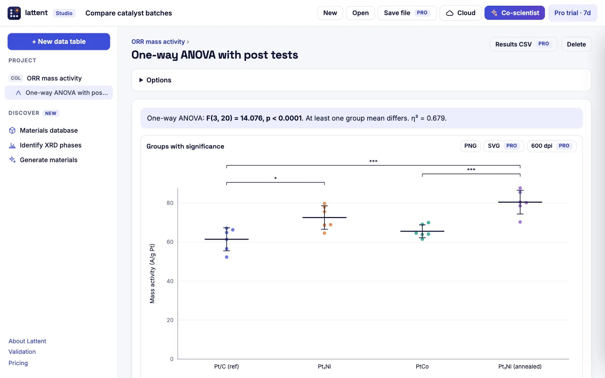

Activation energy
Fit rate constants measured at several temperatures with the Arrhenius equation, with replicates and weighting handled properly.
- Eₐ in kJ/mol and eV with a 95% CI
- Pre-exponential factor
Catalysis
Extract activation energies, compare catalyst batches with the right statistics, fit adsorption isotherms, and let Bayesian optimisation choose the next composition to test.

Each workflow opens with your data in the browser. Nothing is uploaded, and every result comes with its figure and methods text.
Fit rate constants measured at several temperatures with the Arrhenius equation, with replicates and weighting handled properly.
One-way or Welch’s ANOVA with Tukey or Holm–Šidák post tests. Lattent checks normality and equal variance first and suggests the right test.
Rank Langmuir, Freundlich and Sips isotherms by AICc, and fit pseudo-first- and pseudo-second-order uptake kinetics.
A Gaussian-process model learns how composition and conditions drive activity and proposes the most informative next experiments.
Built into the curve-fitting engine and checked against SciPy, alongside 30 more and any equation you type yourself.
Free, in your browser, with nothing to install.
Other fields: NanomaterialsBatteries and energyPolymersSemiconductors and opticsElectrochemistryCeramics and alloysAnalytical chemistry